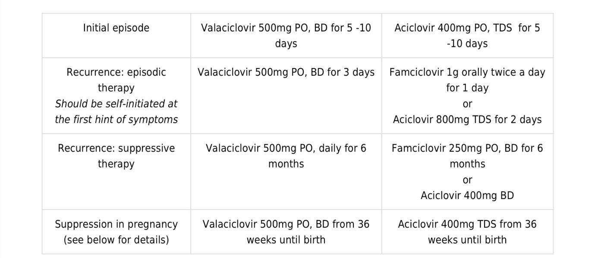
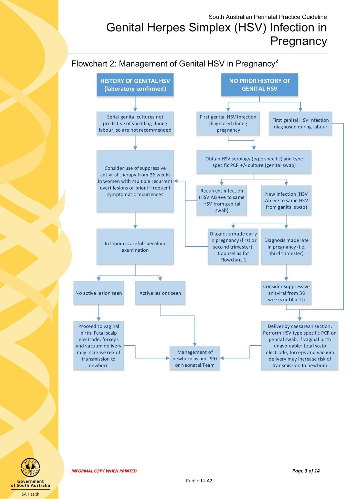
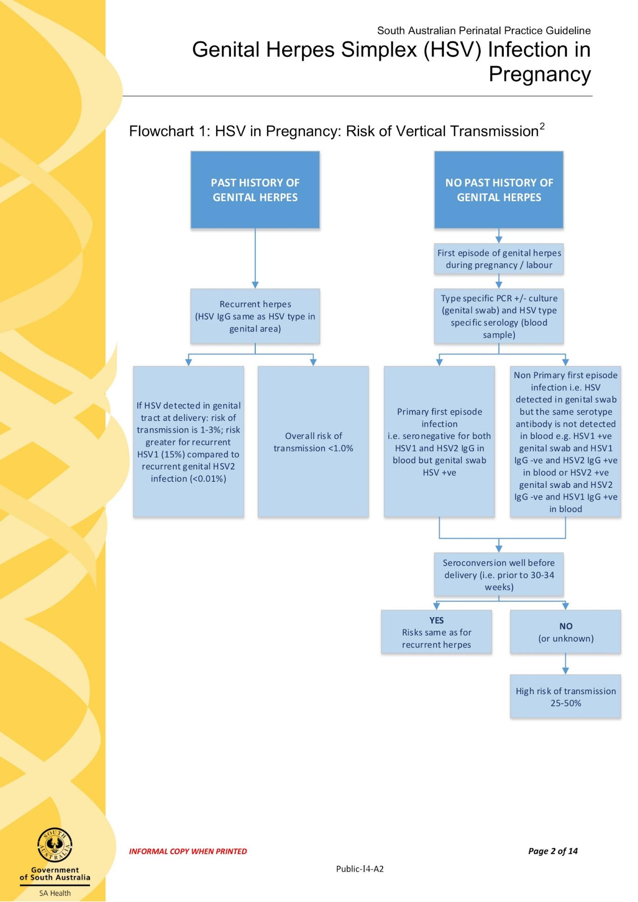

HERPES IN PREGNANCY
Your next patient is a 25 year old lady who is 16/20 weeks pregnancy. She has presented to you complaining of tingling down below.
• Task:
• Take history for 5 minutes
• Physical examination will be given to you on a card
• Explain your diagnosis
• Explain your management plan
- Common pitfall: Candidates diagnose herpes and still fail because they miss differentials.
HISTORY TAKING
Opening
- ID check, introduce yourself, open-ended question.
- Patient says: pregnant, feeling tingling in vagina.
- No pain mentioned in stem.
- Acknowledge concern and reassure.
Explore Complaint
- Describe: What do you mean by tingling? Is it Numbness? Itchiness? Is it Burning pain?
- Expect answer leaning towards burning/painful/irritated.
- Expect answer leaning towards burning/painful/irritated.
- Timing: When did it start? On/off or constant? Getting worse?
- First time? Has this happened before? (pt may say had this before)
- Better/worse factors.
- Does it Worse on urination? (Herpetic ulcer → painful on passing urine, but doesn’t necessarily mean UTI.)
DIFFERENTIALS
1. Dermatological / Skin Problems
- Ask:
- Any rashes?
- Any redness?
- Any ulcers?
- Any rashes?
- Dermatitis: Ask about itchiness (e.g., contact dermatitis).
- Herpes: Classic STI causing ulcers.
- Symptoms of genital herpes: Any lumps and bumps in groin? (Groin lymphadenopathy; tiredness/fever later).
- Mini sexual history:
- Do you practice safe sex/use condoms?
- Multiple partners ever?
- Ever diagnosed with STI?
- Not a full sexual history—“mini.”
- Do you practice safe sex/use condoms?
2. Vaginal Differentials
- Pelvic inflammatory disease:
- Vaginal discharge?
- Fever/chills?
- Tiredness?
- nausea,vomiting?
- Vaginal discharge?
- Bartholin problems (abscess / bartholinitis):
- Any swelling/lumps around vagina?
- Any swelling/lumps around vagina?
3. Urinary Problems
- Dysuria? Burning or pain on urination?
- Frequency? R u passing urine more frequently?
- Abdominal pain?
- (Fever, nausea, vomiting already asked.)
- Consider cystitis/pyelonephritis.
4. Neurological Deficit
- Tingling = neurological symptom.
- Ask:
- Back pain?
- Weakness/numbness in legs?
- Leaking urine?
- Headache and neck pain?
- Back pain?
- Thinking about Cauda equina syndrome (top differential), cervical myelopathies, brain tumor.
5. Pregnancy History
- Full blood examination?
- Dating scan?
- Down syndrome screening?
- 18–20 week ultrasound if close to 20 weeks.
- Too early for fetal movements/preeclampsia unless 20 weeks.
- Ask:
- Vaginal bleeding?
- Abdominal pain?
- Vaginal discharge (if missed earlier).
- Vaginal bleeding?
HISTORY FINDINGS
- Previous Herpes history
- (Older exams: Happened before 3 years ago but resolved on it's own, did not seek any treatment at that time as she felt shy.)
- + Dysuria
- + unsafe sexual behaviour
PHYSICAL EXAMINATION (PHOTO)
- Typical photo of herpes.
- Vesicular lesions rupture → look like ulcers.
DIAGNOSIS
Genital herpes (you have a condition called Genital Herpes)
- Infection caused by herpes virus, sexually transmitted.
Reasons
- Tingling ± burning/pain.
- Typical ulcers seen in your private parts
- History of unsafe sexual practices.
Differentials considered
- Skin conditions (contact dermatitis).
- Other infections (LGV, syphilis).
- Vaginal infections (candida, PID, bartholinitis/bartholin abscess).
- UTIs (cystitis, pyelonephritis).
- Neurological problems (cauda equina, cervical myelopathies).
MANAGEMENT
Key Concerns
- Two important questions:
- Is it first episode or recurrent? (Immunity/antibodies.)
- Is it close to delivery or not?
- Is it first episode or recurrent? (Immunity/antibodies.)
- Concern: Baby crossing birth canal → neonatal herpes complications (encephalitis, pneumonitis).
Do we treat?
- Recurrent herpes needs treatment.
- Antivirals don’t kill virus but:
- Reduce severity.
- Shorten duration.
- Reduce severity.
- Acyclovir and valacyclovir not dangerous in pregnancy.
General Guideline Points
- First episode → treat.
- Recurrent episode → treat.
- Multiple flare-ups → consider suppression until birth.
- Safe agents: Acyclovir, valacyclovir.
Transmission Risk
- Recurrent herpes → overall low risk (antibodies).
- Active lesions at delivery = transmission risk.
- If no rash → usually okay for vaginal birth.
Close to Labor
- Perform speculum examination to look for lesions.
- If no active lesions → vaginal birth.
- If active lesions → consider cesarean section.
- Decision balanced with maternal risks and future pregnancies.
- If no active lesions → vaginal birth.
Primary (First Episode) at Onset of Labor
- Severe symptoms expected.
- No time to develop antibodies.
- Advise cesarean section.

POSTPARTUM (BABY)
Mother with recurrent herpes
- Normal postnatal care.
- Assess for symptoms.
- Do swab, urine HSV test.
- Monitor for fever/rash.
At birth
Paediatrician / neonatologist at birth
Complete examination of the baby for clinical signs of HSV
Transfer to neonatal care
Collect urine for HSV 1 and 2 PCR
Complete blood picture (low platelets)
Liver function test
Coagulation profile
HSV PCR on blood
Lumbar puncture (CSF biochemistry, cell count, HSV PCR and bacteria culture)
Treatment
Commence intravenous aciclovir
For pre-emptive treatment (high risk asymptomatic infant without laboratory confirmed infection), 10 days IV aciclovir is recommended.
24 hours after birth
Collect surface swabs (eye, throat, umbilicus and rectum) and send for HSV 1 and 2 PCR.
High-risk infant (initial episode + active lesions at birth canal)
- At birth:
- Full investigations.
- Start IV acyclovir.
- Full investigations.
Symptomatic infant
- IV acyclovir.


SUMMARY FOR EXAM CASE (RECURRENT HERPES)
- Take a swab (dry viral swab) to confirm herpes.
- Consider HSV serology (HSV1, HSV2 antibodies).
- Acute management:
- Antivirals (e.g., acyclovir/valacyclovir) for 5 days.
- Non-pharmacological: Warm water (sitz bath), simple painkillers (paracetamol). Avoid lignocaine gel in pregnancy.
- Antivirals (e.g., acyclovir/valacyclovir) for 5 days.
- Delivery planning:
- Active lesions close to delivery → prefer to do cesarean section (patient-centered discussion).
- Active lesions close to delivery → prefer to do cesarean section (patient-centered discussion).
- Recurrent multiple episodes: Suppressive treatment (acyclovir till birth).
- Safe sex advice.
- No partner notification.
- No Department of Health notification.
- No partner notification.
IF INITIAL EPISODE
Questions
- Serology
- Both IgG negative = primary first episode.
- HSV type on swab +
- Both IgG negative = primary first episode.
- Gestational age
- Close to delivery (>34 weeks): Plan delivery (most likely cesarean). Postnatal check ups for symptoms and risks.
- Far from delivery (<34 weeks): Manage similar to recurrent:
- Treat episode.
- Suppression if recurrent.
- Check for active lesions near delivery:
- Active → cesarean.
- No lesions → vaginal delivery.
- Active → cesarean.
- Treat episode.
- Close to delivery (>34 weeks): Plan delivery (most likely cesarean). Postnatal check ups for symptoms and risks.